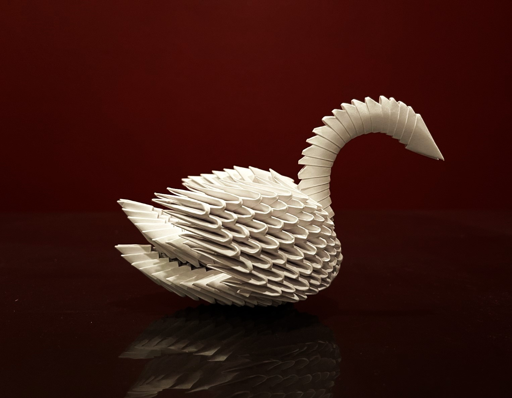
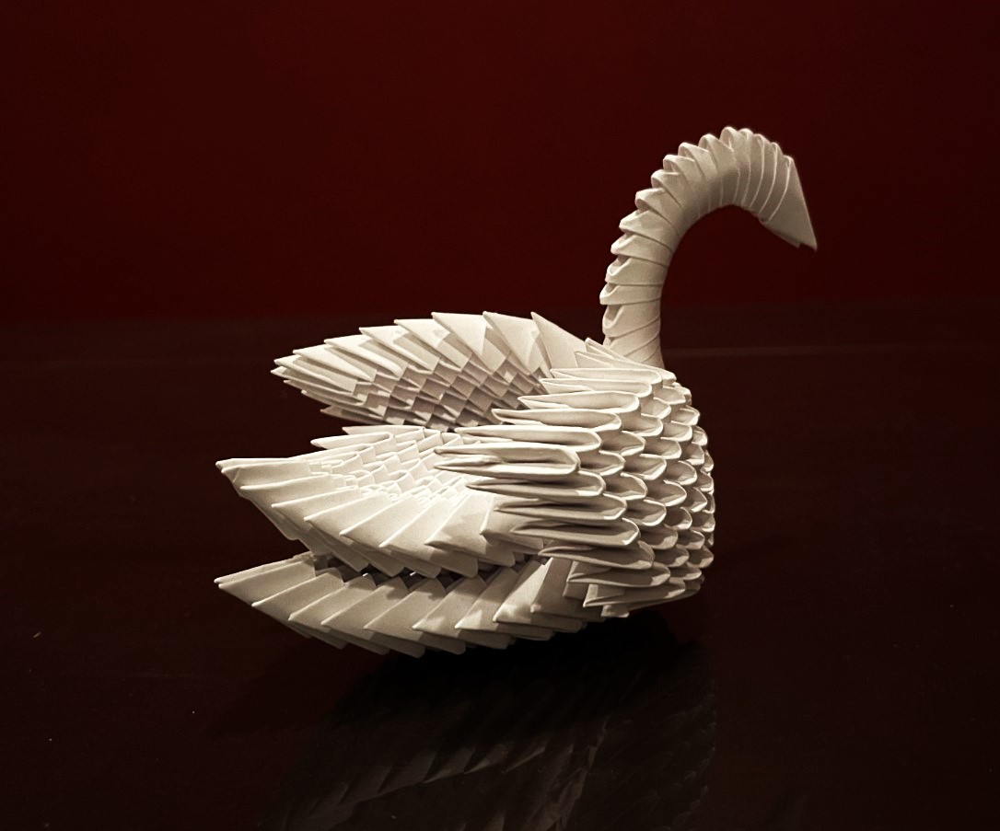

Origami Swan
- Medium
- Paper
This swan used the technique of aggregating multiple identical parts. Each piece could connect to the top or the bottom of another. I created 5 parts: the wings, the two bottom pieces, and the neck. It was a painstaking process to make and fix around 320 individual units together but the pattern it created was interesting; it mimics how feathers are layered.

